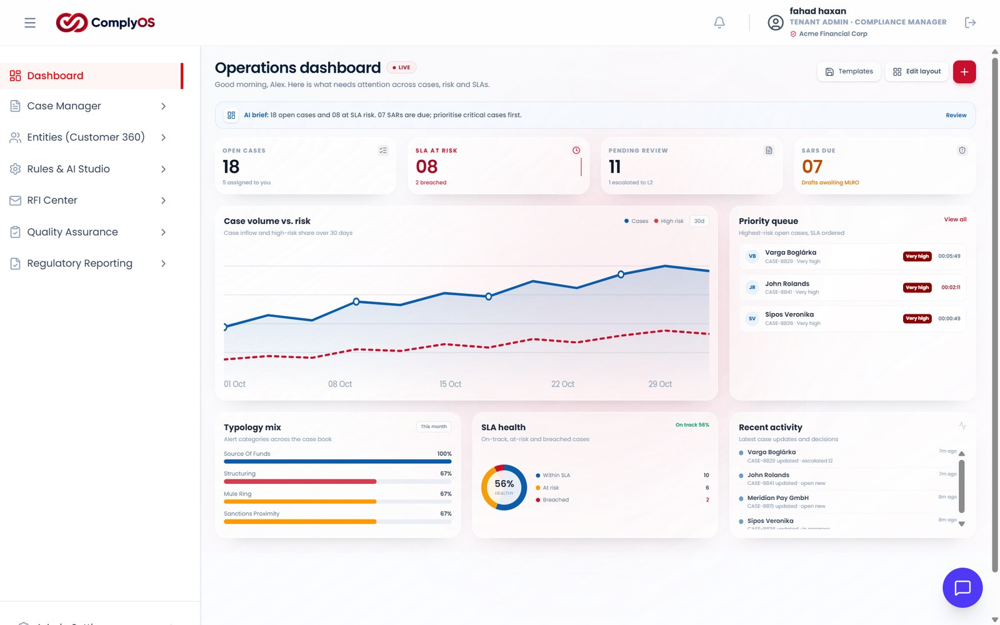
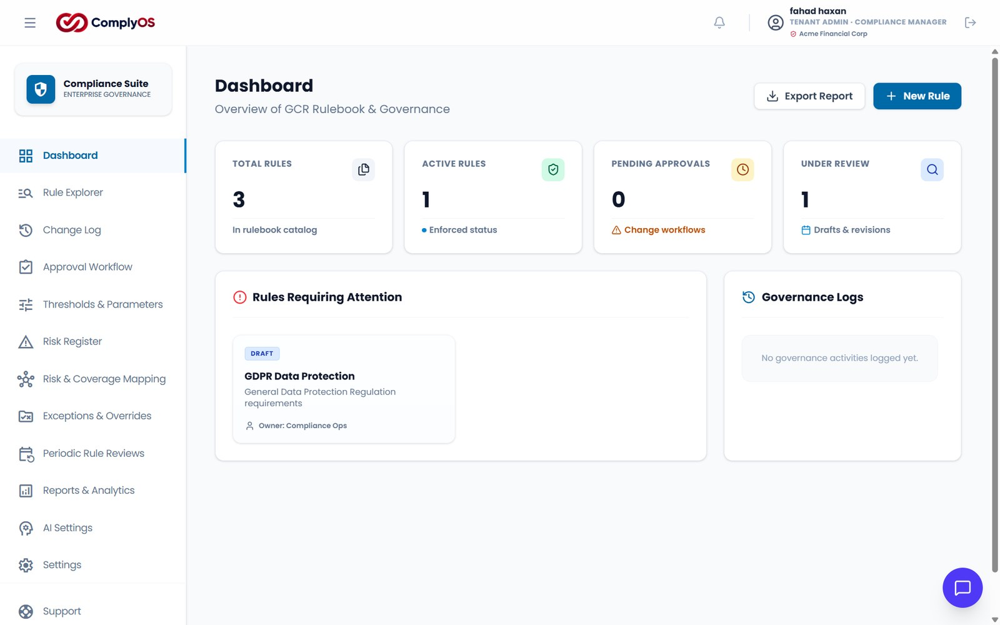
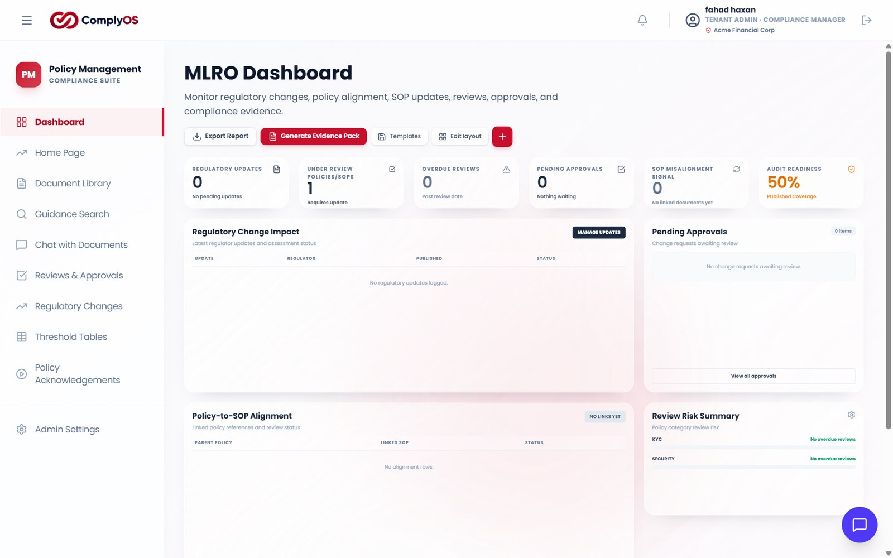
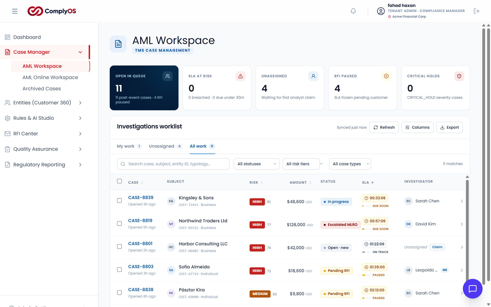
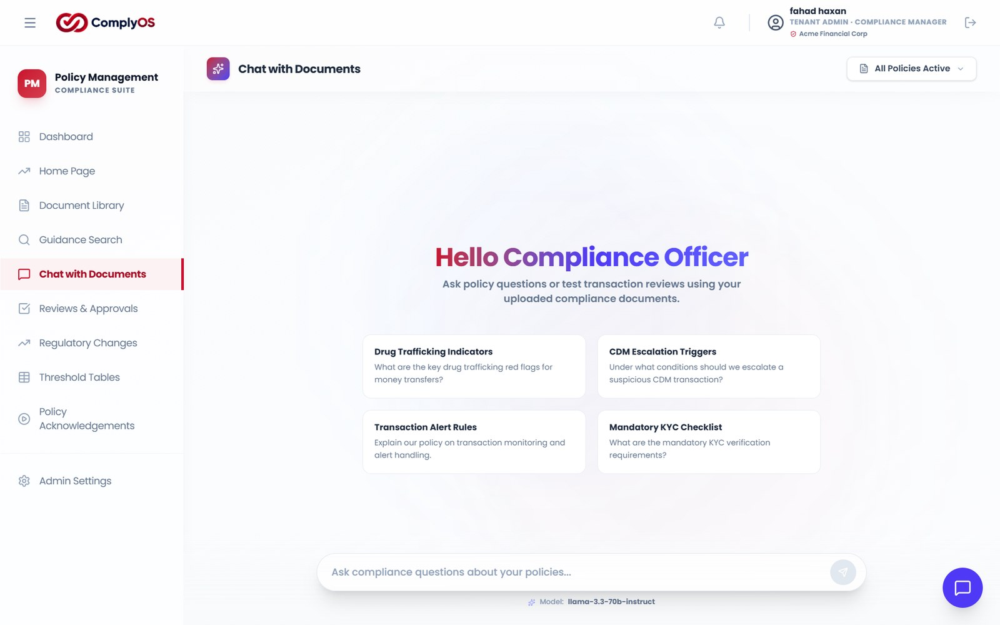

Fragmented operations
Policies, procedures, regulatory requirements, controls and evidence maintained across separate repositories and applications.
One governance and evidence environment, with shared records and version history.
ComplyOS — Unified Compliance Operations & Financial Crime Intelligence Platform
An independent product development initiative exploring how modern software architecture, automation and AI can address practical challenges in compliance operations and financial crime technology.

Compliance functions operate across regulatory obligations, governance documentation, operational controls, financial crime monitoring, investigations and management reporting — frequently through disconnected systems, individual applications, spreadsheets and manual workflows.
Policies, procedures, regulatory requirements, controls and evidence maintained across separate repositories and applications.
One governance and evidence environment, with shared records and version history.
Policy acknowledgements, reviews and escalations coordinated by email and spreadsheets outside core systems — fragmenting the audit trail.
Acknowledgement and approval workflows inside the platform, with the audit trail intact.
Reporting focuses on historical activity rather than emerging risks, operational weaknesses or the implications of regulatory change.
Operational dashboards and reporting that surface risk and readiness, not just history.
Traditional monitoring depends heavily on predefined thresholds and static rules, missing complex behavioural patterns.
Configurable detection, visual rule building and simulation — with further detection capability in development.
Implementing and maintaining sophisticated compliance infrastructure is difficult for growing fintechs, especially when functionality is spread across systems.
A modular, multi-tenant platform that extends incrementally instead of being replaced.
The absence of an intelligent, cohesive environment connecting compliance governance, operational execution and financial crime monitoring.
See how the product answers itFirst-hand exposure across banking and fintech, industry research and professional discussions.
Recurring inefficiencies in regulatory change management, policy maintenance and documentation — and the gap between documented frameworks and actual execution.
Functional gaps across existing compliance and monitoring tools, the limits of rule-based detection, and opportunities in document intelligence, semantic retrieval and anomaly detection.
Approaches to modular, configurable compliance software; multi-tenant application and data architecture; and practical applications of retrieval-augmented generation.
ComplyOS aims to provide a connected environment where compliance documentation, operational controls, financial crime detection and intelligent decision support work together rather than operate as isolated capabilities.
A central environment for managing regulatory obligations, compliance documentation and internal governance.

A structured environment for translating compliance frameworks into operational activities and maintaining supporting evidence.

Monitoring designed to support both historical transaction analysis and ongoing transaction monitoring — with a configurable path from risk identification to active detection.

AI embedded into practical compliance workflows to improve information access, document interpretation and analytical efficiency.

Reduce the distance between identifying a risk and running detection against it.
A compliance team identifies a financial crime risk that needs a new detection capability.
The detection is configured through a visual rule-building interface rather than a long engineering hand-off cycle.
Rules are evaluated against transaction data before going live, so behaviour is tested first.
The capability enters active monitoring, with alerts and cases managed behind it.
“Moving from rule ideation to active detection in days, rather than months — while reducing routine dependency on engineering teams.”
Product objective — financial crime monitoringThe same records support governance, operations and detection.
A policy is acknowledged and tracked, then feeds the control register and audit evidence.
Alerts open cases with owners and SLAs, and roll up into regulatory reporting.
Answers are grounded in internal documentation, with source references for traceability.
A modular, tenant-aware architecture designed to support distinct functional domains while maintaining separation between tenant data.
Conceptual representation of the platform's design and data organisation — not a claim that every module operates as an independently deployed service.
Every governance protocol moves through a controlled lifecycle — authored, reviewed, approved, published and periodically revalidated — with each step recorded.
One monitoring environment for retrospective analysis and ongoing activity, with configurable rule execution feeding alerts and cases.
Document processing and question answering are separate pipelines; the vector index supplies the context that grounds each answer.
Functional domains stay logically organised and extensible.
Tenant data remains separated within a shared database environment.
Compliance functionality adapts to changing operational requirements.
Capabilities communicate through defined interfaces.
AI addresses identifiable workflow challenges rather than existing as a standalone feature.
Development has followed an iterative approach — combining functional requirements, architectural decisions, AI-assisted implementation and continuous refinement.
Documentation is fragmented, manual to classify and hard to retrieve.
Controls and supporting evidence spread across spreadsheets, documents and approvals.
Monitoring must analyse activity and adapt detection as risks evolve.
Rule builder and simulation are developed; integration between the components remains outstanding.
Finding relevant information across large policy collections is slow and manual.
Click any screen to open it full size.
The development approach combines product ownership and technical exploration — with AI-assisted tools supporting implementation and iterative refinement.
ComplyOS is differentiated by how its domains reinforce one another — and by capabilities that are already working in the product.
A unified environment rather than a collection of disconnected utilities.
Configurable rule development with the potential to streamline ideation to testing and deployment.
Documentation becomes a searchable knowledge resource rather than a passive archive.
Separation between tenant data, with room for incremental product expansion.
AI embedded in practical workflows rather than positioned as a separate chatbot.
ComplyOS is actively evolving — the roadmap shows how each of these areas advances next.
ComplyOS is being developed incrementally — strengthening existing capabilities, connecting independently developed components and expanding the platform's intelligence.
Advance the platform's financial crime monitoring capabilities.
Make compliance information more accessible and actionable.
Strengthen the foundation for broader functionality and reliability.
From managing compliance activities in isolation to connecting the intelligence and execution behind them.
Have a suggestion, a question about a product decision, or something worth discussing? I'd be glad to hear it — email is the fastest way to reach me.